Spinner의 'dataType' 속성이 'date'로 설정되었을 때, 'dateIncrementType'을 사용하여 데이터의 증감 단위를 설정한 예제입니다. 'dateIncrementType' 속성의 설정에 따른 기능은 아래와 같습니다.
dateIncrementType="year" : 연 단위 증감
dateIncrementType="month" : 월 단위 증감
dateIncrementType="day" : 일 단위 증감
dateIncrementType="hour" : 시 단위 증감
dateIncrementType="minute" : 분 단위 증감
'dateIncrementType' 속성은 'dataType' 속성의 설정 값이 "date" 또는 "time"으로 지정된 경우만 동작합니다.
증감 기능은 컴포넌트에 포함된 버튼을 클릭하거나 입력 영역(Input)에서 키보드의 방향키 "UP", "DOWN"을 눌러 사용할 수 있습니다.
연 단위 증감 설정
월 단위 증감 설정
(기본 설정) 일 단위 증감 설정
시 단위 증감 설정
분 단위 증감 설정
컴포넌트 우측에 구성된 버튼을 클릭하여 데이터의 증감을 확인합니다.
예제 영역 'dateIncrementType="year"'에서 테스트합니다.Spinner의 초기 값은 '2024'입니다.
1
STEP 1: Spinner의 증가 버튼을 클릭합니다.
Image 1.브라우저(Chrome) 실행 예시
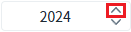
2
STEP 2: 실행 결과를 확인합니다.
연 단위 '1'이 증가되어, '2025'가 표시됩니다.
Image 2.브라우저(Chrome) 실행 예시
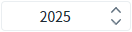
예제 영역 'dateIncrementType="month"'에서 테스트합니다.Spinner의 초기 값은 '2024/12'입니다.
1
STEP 1: Spinner의 증가 버튼을 클릭합니다.
Image 3.브라우저(Chrome) 실행 예시
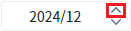
2
STEP 2: 실행 결과를 확인합니다.
월 단위 '1'이 증가되어, '2025/01''가 표시됩니다.
예제 영역 '(기본) dateIncrementType="day"'에서 테스트합니다.Spinner의 초기 값은 '2024/12/31'입니다.
1
STEP 1: Spinner의 증가 버튼을 클릭합니다.
Image 4.브라우저(Chrome) 실행 예시
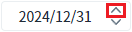
2
STEP 2: 실행 결과를 확인합니다.
일 단위 '1'이 증가되어, '2025/01/01'이 표시됩니다.
Image 5.브라우저(Chrome) 실행 예시
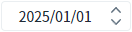
예제 영역 'dateIncrementType="hour"'에서 테스트합니다.Spinner의 초기 값은 '2024/12/31 12'입니다.
1
STEP 1: Spinner의 증가 버튼을 클릭합니다.
Image 6.브라우저(Chrome) 실행 예시
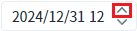
2
STEP 2: 실행 결과를 확인합니다.
시 단위 '1'이 증가되어, '2024/12/31 13'이 표시됩니다.
Image 7.브라우저(Chrome) 실행 예시
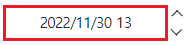
예제 영역 'dateIncrementType="minute"'에서 테스트합니다.Spinner의 초기 값은 '2024/12/31 12:59'입니다.
1
STEP 1: Spinner의 증가 버튼을 클릭합니다.
Image 8.브라우저(Chrome) 실행 예시
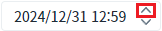
2
STEP 2: 실행 결과를 확인합니다.
분 단위 '1'이 증가되어, '2024/12/31 13:00'이 표시됩니다.
Image 9.브라우저(Chrome) 실행 예시
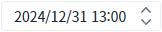
1
STEP 1: 속성을 설정합니다.
[필수] dataType="date"
데이터 타입을 날짜 형식으로 지정합니다.
[필수] dateIncrementType="year"
증감 단위를 연 단위로 지정합니다.
Image 10.웹스퀘어 스튜디오의 Component View - 속성 설정 예시
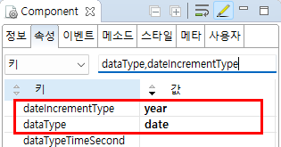
Example 1.Source
<!-- spinner의 소스 본문 예시 --> <w2:spinner dataType="date" dateIncrementType="year" id="spi_exam1"> </w2:spinner>
1
STEP 1: 속성을 설정합니다.
[필수] dataType="date"
데이터 타입을 날짜 형식으로 지정합니다.
[필수] dateIncrementType="month"
증감 단위를 월 단위로 지정합니다.
Image 11.웹스퀘어 스튜디오의 Component View - 속성 설정 예시
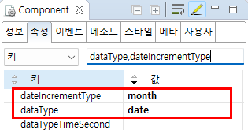
Example 2.Source
<!-- spinner의 소스 본문 예시 --> <w2:spinner dataType="date" dateIncrementType="month" id="spi_exam2"> </w2:spinner>
1
STEP 1: 속성을 설정합니다.
[필수] dataType="date"
데이터 타입을 날짜 형식으로 지정합니다.
[필수] dateIncrementType="day"
증감 단위를 일 단위로 지정합니다.
Image 12.웹스퀘어 스튜디오의 Component View - 속성 설정 예시
Example 3.Source
<!-- spinner의 소스 본문 예시 --> <w2:spinner dataType="date" dateIncrementType="day" id="spi_exam3"> </w2:spinner>
1
STEP 1: 속성을 설정합니다.
[필수] dataType="date"
데이터 타입을 날짜 형식으로 지정합니다.
[필수] dateIncrementType="hour"
증감 단위를 시 단위로 지정합니다.
Image 13.웹스퀘어 스튜디오의 Component View - 속성 설정 예시
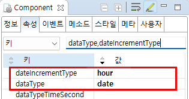
Example 4.Source
<!-- spinner의 소스 본문 예시 --> <w2:spinner dataType="date" dateIncrementType="hour" id="spi_exam4"> </w2:spinner>
1
STEP 1: 속성을 설정합니다.
[필수] dataType="date"
데이터 타입을 날짜 형식으로 지정합니다.
[필수] dateIncrementType="minute"
증감 단위를 분 단위로 지정합니다.
Image 14.웹스퀘어 스튜디오의 Component View - 속성 설정 예시
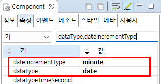
Example 5.Source
<!-- spinner의 소스 본문 예시 --> <w2:spinner dataType="date" dateIncrementType="minute" id="spi_exam5"> </w2:spinner>
dataType
dateIncrementType
dataTypeTimeSecond